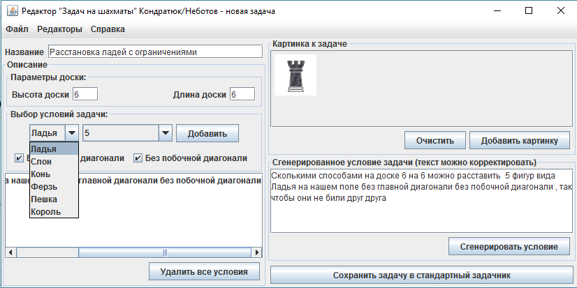

- Операционная система: Windows
- Необходимые пакеты: Java SE Runtime Environment
- Ввести название задачи.
- Ввести размеры доски (высоту и ширину).
- Выбрать фигуры поставленные на поле (количество фигур можно ввести с клавиатуры щелкнув по
полю
два раза).
- Если выбрана ладья на поле - можно выбрать дополнительное ограничение на условие (фигуры не должны стоять на главной диагонали и(или) на побочной диагонали).
- Если выбраны дополнительные ограничения, то необходимо что бы доска была квадратной, так как у прямоугольной доски нет главной и побочной диагонали.
- Нажать Сгенерировать условие, при этом произойдет автоматическая выборка картинок фигур которые присутствуют в условии.
- Если нужно подкорректировать условие задачи, то можно это сделать в окне Сгенерированное условие задачи.
- Нажать Сохранить задачу в стандартный задачник и выбрать место куда следует сохранить файл с задачей. в папке tasks есть основная папка для задач про шахматы Chess.
- Перебор всех вариантов комбинаций и поиск среди них подходящих по заданному условию
- ) По формуле.
- Пешки:
Реализация генератора задач на тему: Расстановка шахматных фигур на доске, так чтобы они не били друг друга
Программа предназначена для визуализации протоколов, основанных на криптосистемах с открытой частью ключа. В программе представлены стандартные протоколы, обсужденные на лекциях.
Системные требования
Инструкции
В редакторе присутствует возможность менять размеры доски, выбирать фигуры которые нужно
расставлять
на шахматной доске, картинки фигур, а так же дополнительные ограничения такие, как фигуры не
могу
стоять на главной диагонали и(или) на побочной диагонали. В последней версии редактора
используются
нейтральные фигуры (фигуры не имеющие цвета)
Задача про расстановку королей на шахматной доске 6 на 5, без ограничений. После генерации
условия
задания, картинки автоматически прикрепляются к задаче. Сгенерированое условие к задаче можно
изменять на вкус пользователя, корректировать падежи слов и представлять задачу в красивом виде.
Задание про расстановку слонов на доске 6 на 6 с ограничениями.
Поддерживаемые виды фигур: пешка, слон, ладья, конь, ферзь, король.
Инструкция по использованию:
Проверка задач про шахматы программой wisetasks В программе wisetasks проверка задач осуществляется двумя способами:
В обоих случаях программа сравнивает полученный ответ с предложенным ответом от
пользователя.
В проверке задач про шахматы используется вариант с перебором.
После того как пользователь ввел свой ответ на задачу в программу, она начинает составлять свой ответ для сравнения. Программа берет из файла с задачей условия задания множества с которым будет работать и перебирать все элементы этого множества. В задачах, которые были сгенерированы в встроенном редакторе Шахмат множество задается так: каждая клетка доски задана двумя координатами, первая отвечает за номер строки, вторая за номер столбца. Для того чтобы найти все варианты расстановок K фигур на доске NxM нужно сначала найти координаты каждой клетки на доске, для этого используется декартово произведение двух множеств (множества строк и множества столбцов). После этого нам нужно найти количество сочетаний из NxM элементов по K. Таким образом, для проверки задается множество всех расстановок K фигур на доске NxM, из которого программа будет выбирать нужные исходя из условий встроенных в файл с задачей.
Варианты условий для выбора нужных вариантов расстановки фигур на доске так, чтобы они не угрожали друг другу: